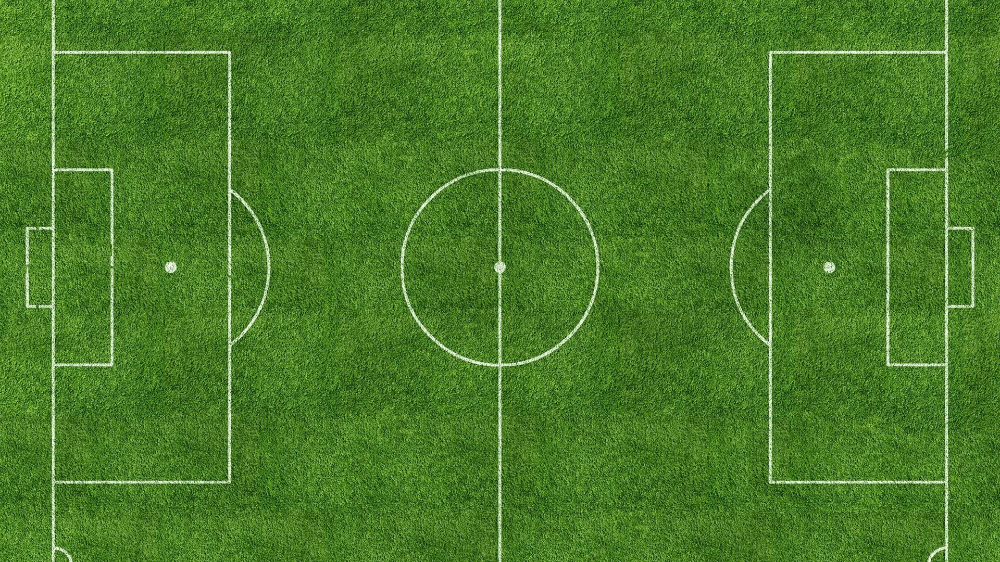
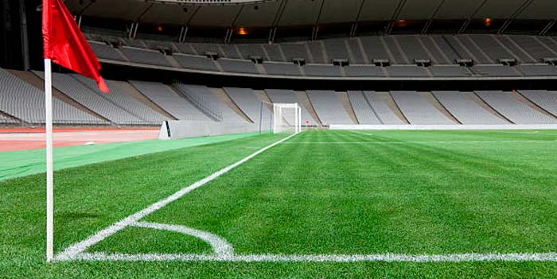
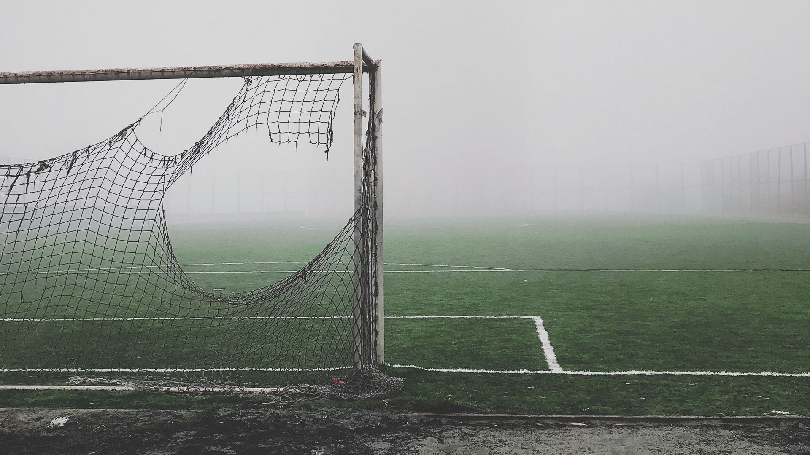

⬆
Футбол (від англ. football) — командний вид спорту, в який грають дві команди по одинадцять гравців зі сферичним м'ячем. Близько 250 мільйонів чоловіків і жінок із більш ніж 200 країн грають у футбол, що робить його найпопулярнішим у світі видом спорту. Футбол — олімпійський вид спорту.
У футбол грають на прямокутному полі з воротами на кожному кінці. Мета гри полягає в тому, щоб забити м'яч у ворота протилежної команди. Гравцям не дозволено торкатися м'яча руками, поки він перебуває в грі, якщо вони не воротарі (і тільки тоді, коли він перебуває в їхньому штрафному майданчику), або під час укидання м'яча. Інші гравці здебільшого використовують свої ноги, щоб завдати вдару або передати м'яч, але можуть також використовувати голову і тулуб. Команда, яка забиває більше голів до кінця матчу — виграє його. Якщо жодна команда не забила м'яч, або рахунок однаковий, то оголошується нічия, або гра переходить у додатковий час, або пенальті, залежно від формату змагань.
Закони гри спочатку були кодифіковані футбольною асоціацією Англії 1863 року, а згодом поширилися всією планетою. На всесвітньому рівні футболом керує Міжнародною федерацією футболу асоціації (FIFA; фр. Fédération Internationale de Football Association), яка організовує Кубок світу для чоловіків і жінок щочотири роки.
Футбольний м'яч
Схема футбольного поля
Футбольний арбітр
Кутовий прапорець

Тактика
Футбольні ворота
Ігри, схожі за основними принципами на сучасний футбол, існували в різних народів з давніх часів. Так, серед претендентів на головний прообраз футболу є стародавні китайці (чжу-чу), давні римляни та греки (гарпастум), середньовічні італійці (кальчо), ацтеки. Проте нинішній футбол є прямим нащадком гри у м'яч в Британії. Перші правила гри, які чітко розрізняли футбол і регбі, були записані 1863 року, хоча перші футбольні клуби з'явилися дещо раніше. Футбол за встановленими правилами здобув популярність наприкінці XIX-го, на початку XX-го століття. Завдяки британським морякам гра потрапила в численні портові міста світу, а звідти поширилася на територію країн Європи, Латинської Америки, Африки, Азії.
Потреба в створенні єдиної організації для управління всім світовим футболом стала очевидною на початку 20 століття зі зростанням популярності та кількості міжнародних матчів. Спочатку Футбольна Асоціація Англії очолювала процес врегулювання різних дискусійних питань зі створення, але ця робота була без прогресу; і тому право створити таку організацію випало на долю семи інших європейських держав. ФІФА було засновано 21 травня 1904 року в Парижі, саме цей факт став причиною того, що в загальноприйнятих повній та скороченій формі використовується французька назва. Країнами-засновниками були Бельгія, Данія, Іспанія, Нідерланди, Франція, Швейцарія і Швеція; трохи пізніше цього ж року до ФІФА приєдналася Німеччина, а ще через рік Австрія, Англія та Італія. Першим президентом ФІФА був француз Робер Герен. Перші змагання під егідою ФІФА були проведені в 1906 році, хоча особливих успіхів в організації змагань ФІФА не досягла. Цей факт, в комбінації з низкою економічних чинників привів до відставки Герена з поста президента і його заміни Деніелом Вулфоллом з Англії, яка на той час уже стала членом асоціації. Наступні змагання під егідою ФІФА — футбольний турнір на Олімпійських Іграх 1908 року в Лондоні були набагато успішнішими, хоча і виникли певні проблеми пов'язані з участю професійних футболістів в Олімпійських Іграх.
Членство ФІФА розширилося за межі Європи з прийняттям Південно-Африканського Союзу в 1909, Аргентини і Чилі в 1912 і Сполучених Штатів в 1913.
Під час Першої світової війни ФІФА пережила серйозні випробовування, оскільки багато гравців вирушили на фронт, а можливість міжнародних переїздів для проведення турнірів була сильно обмеженою. Після війни, зі смертю Вулфолла, президентський пост обійняв голландець Карл Хіршманн. ФІФА була врятована від повного розвалу, але ціною цього був вихід з організації усіх чотирьох британських асоціацій, котрі не бажали брати участь у міжнародних змаганнях з їхніми недавніми ворогами.
В сучасну епоху за кількістю гравців на всіх рівнях футбол поступається тільки легкій атлетиці й займає перше місце серед командних видів спорту. Сучасна історія футбольного м'яча розпочалась в середині XIX століття, коли Чарльз Гудієр розробив перший м'яч, виготовлений з вулканізованої гуми. Сім років по тому, в 1862 році інший винахідник Річард Ліндон створив першу надувну гумову камеру для м'яча. Пізніше Ліндон розробив насос для камери, і на виставці в Лондоні його винахід здобув золоту медаль у футболі.
Сім років після того, в 1863 році була заснована Футбольна асоціація Англії, яка виробила перші уніфіковані футбольні правила, однак в них нічого не згадувалось про футбольний м'яч. У 1872 році офіційно був встановлений стандартний розмір та вага м'яча. До цього розмір та вага м'яча визначались перед матчевими домовленостями обох команд.
Ліга чемпіонів УЄФА (англ. UEFA Champions League) — щорічний футбольний турнір, що проводиться поміж європейськими клубами, які найбільш успішно виступили в національних чемпіонатах попереднього сезону. Турнір запроваджено УЄФА.
Раніше (з сезону 1955/56 до сезону 1991/92) турнір мав назву Кубок Європейських чемпіонів. Починаючи з сезону 1992/93, турнір отримав нинішню назву, хоча формат турніру було змінено з сезону 1991/92.

Дебютний розіграш найпрестижнішого європейського клубного трофею стартував через місяць після першого Конгресу УЄФА, який відбувся 2 березня 1955 року у Відні. Цікаво, що ідея організації Кубка чемпіонів народилася аж ніяк не в самому футбольному союзі. Тоді як члени новоутвореного футбольного союзу зосередилися на створенні міжнародних змагань за участю збірних, редактор французької спортивної газети L'Equipe Габріель Ано висловив ідею щодо організації клубного турніру континентального розмаху. Матчі нового кубка Ано разом із колегою Жаком Ферраном запропонували проводити посеред тижня — у середу ввечері. За правилами, що були обговорені організаторами на початку, заявляти на змагання виключно чемпіонів країн було зовсім не обов'язково — L'Equipe вважала, що до них вигідніше долучати найпопулярніші клуби. Шістнадцять учасників дебютного розіграшу нового турніру цю пропозицію одностайно підтримали на зібранні в Парижі 2—3 квітня 1955 року. Отже, 4 вересня у стартовій грі в Лісабоні «Спортінг» і «Партизан» розійшлися миром — 3:3, а в матчі-відповіді в Белграді перемогу з рахунком 5:2 святкували югослави, які й кваліфікувалися до наступного раунду.
Перші п'ять трофеїв дісталися мадридському «Реалу». Іншим клубам пізніше також вдавалися вражаючі серії — «Аякс» і «Баварія», наприклад, вигравали «кубок з великими вухами» тричі поспіль. У той же час говорити про чиєсь довгострокове домінування в найпрестижнішому єврокубку все-таки не варто. Так, на свій четвертий титул після ударного відрізку на початку 1970-х амстердамці чекали 22 роки. А перемога «Реала» в 1998-му стала першим тріумфом мадридців після 32-річної паузи. Мюнхенці ж, здобувши перемогу над «Валенсією» у фінальній серії післяматчевих пенальті сезону — 2000/01, перервали 26-річне очікування четвертого трофею.
Окремої згадки, напевне, заслуговують і чотири перемоги «Ліверпуля» в період з 1977 по 1984 роки, тому що всі вони були здобуті чотирма практично різними складами. У 2005 році червона ліверпульська зірка знову зійшла на європейському небосхилі. У неймовірному за напруженням вирішальному поєдинку проти італійського «Мілана» англійці зуміли відіграти три м'ячі, а в серії післяматчевих пенальті схилили шальки терезів на свій бік.
Найбільш титулованими командами в історії Ліги чемпіонів УЄФА є «Реал» та «Мілан». З урахуванням підкорених Кубків чемпіонів скарбничка «Реала» вже містить чотирнадцять титулів. Другим із сімома перемогами залишається «Мілан», в активі «Ліверпуля» та «Баварії» — шість тріумфів, у «Барселони», що тріумфувала в 2015 році — п'ять. «Мілан» свій останній трофей виграв у кампанії-2006-2007. Пам'ятною є перемога «Мілана» в сезоні 2002—2003: розпочавши турнірний шлях з третього раунду кваліфікації, міланський клуб завершив його післяматчевими пенальті у двобої проти «Ювентуса». До речі, вирішальний післяматчевий пенальті на манчестерському «Олд Траффорд» забив саме Андрій Шевченко.
Переломним моментом у розвитку найпрестижнішого клубного змагання зазвичай вважають сезон — 1992/93, коли на зміну Кубку чемпіонів прийшла Ліга чемпіонів. У її розіграші до традиційних раундів плей-оф додався осінній груповий етап, який було випробувано роком раніше. Зростання популярності цих змагань призвело до того, що поступово кількість учасників основної сітки зросла з 8 до 32. Матчі Ліги чемпіонів проводяться по вівторках і середах.